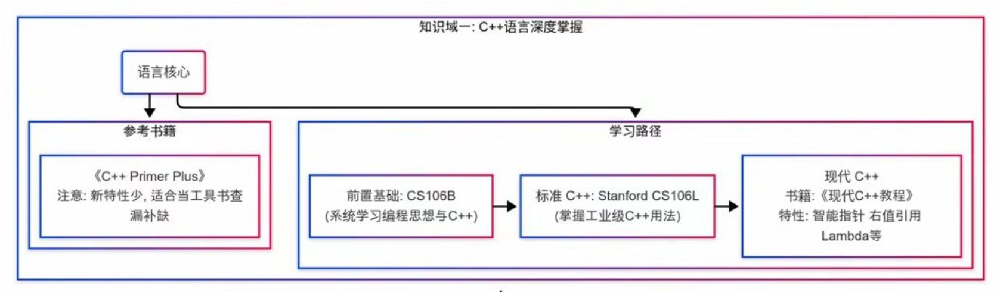
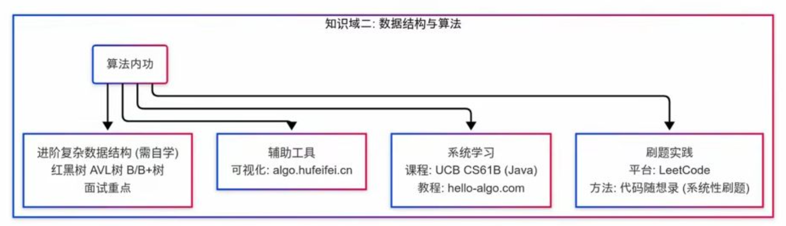
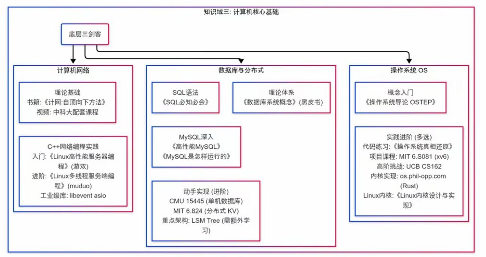
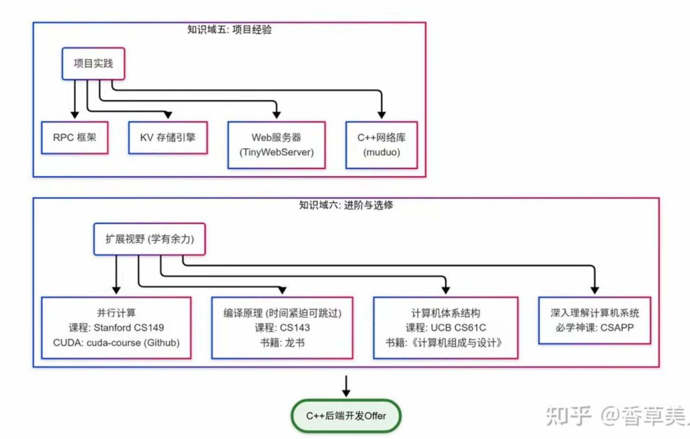

CS Learn
Table of Contents
1. Programming Languages
1.1. C++





1.1.1. C++ Primer Plus
- prerequisite: None
- difficulty: 1
- estimated study time: …
It is only suitable for newbie. If you already learn C programming language, it is filled with nonsense words.
1.1.2. TODO C++ Primer
- prerequisite: None
- difficulty: >3
- estimated study time: …
If you going to work with C++, this book will help you a lot.
1.1.3. C++ Youtube
- author: The Cherno
- prerequisite: had better to have learned one programming languages.
- difficulty: 3
- estimated study time: 30h
1.2. Python
1.2.1. CS 61A: Structure and Interpretation of Computer Programs
- author: Hal Abelson
- prerequisite: None
- website: https://cs61a.org/
- difficulty: 2
- estimated study time: 20h
1.3. JavaScript
1.3.1. Eloquent JavaScript
- author: Marijn Haverbeke
- prerequisites: know basic concepts of programming
- website: https://eloquentjavascript.net/
- difficulty: …
This is an interactive book, like jupyter for python.
2. Data Science
2.1. UCB Data 8: Foundations of Data Science
2.1.1. Intro
- university: UC Berkeley
- prerequisite: None
- programming languages: python
- difficulty: 2
- estimated study time: 32h
2.1.2. Resource
- website: https://www.data8.org/
- video: refer to the website
- materials: https://github.com/data-8
3. Web Development
3.1. MIT Web Development Crash Course
3.1.1. Intro
- university: MIT
- prerequisite: master at least one programming language.
- programming languages: JavaScript/HTML/CSS/NoSQL
- difficulty: 3
estimated study time: …
This lesson is very clear, but the workshop assignment is lack of direction, far away from the lesson. This lesson is not suitable for those who is lack of experience with web development, because you can not ask questions and get answer immediately as students really in the classroom.
3.1.2. Resource
- website: https://weblab.mit.edu/schedule
- video: refer to the website
- materials: https://github.com/weblab-workshops
- workshop: https://github.com/weblab-workshops/catbook-react
- homework: https://weblab.is/hwn